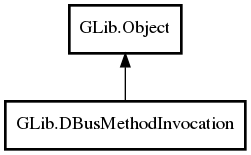

DBusMethodInvocation
Object Hierarchy:

Description:
public class DBusMethodInvocation :
Object
Namespace: GLib
Package: gio-2.0
Content:
Creation methods:
Methods:
- public weak DBusConnection get_connection ()
- public unowned string get_interface_name ()
- public weak DBusMessage get_message ()
- public weak DBusMethodInfo get_method_info ()
- public unowned string get_method_name ()
- public unowned string get_object_path ()
- public weak Variant get_parameters ()
- public unowned string get_sender ()
- public void* get_user_data ()
- public void return_dbus_error (string error_name, string error_message)
- public void return_error (Quark domain, int code, string format, ...)
- public void return_error_literal (Quark domain, int code, string message)
- public void return_error_valist (Quark domain, int code, string format, va_list var_args)
- public void return_gerror (Error error)
- public void return_value (Variant? parameters)
- public void return_value_with_unix_fd_list (Variant? parameters, UnixFDList? fd_list)
- public void take_error (owned Error error)